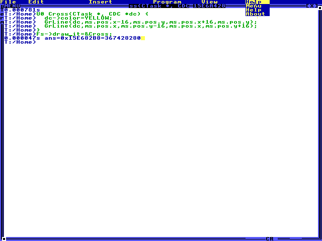

Live cursor callback
Task cursor_callback
Grade: needs review Execution: budget_exhausted · Steps: 40 · Elapsed: 209.347 s · Score: —
Review the full trajectory. The exact anonymous-CTask callback must compile in the live shell and be installed using Fs->draw_it=&Cross. A live yellow cross must appear at two pointer positions before and after opening the document, moving by the same delta as the pointer. Allow the stock bordered fixture's measured +8,+16 rendering offset. The trajectory must include a right-click over the top menu bar with a visible pulldown, then the help index and an actual clicked link to Command Line Overview. That document must remain open at completion. TempleOS exposes the top menu on hover; a desktop context menu is not required. The callback must not be cleared, replaced, reinstalled after navigation, or reproduced as a static image. Menus may cover the cross where they overlap because they render later; this does not imply callback removal. A screenshot alone cannot prove the callback remains live. Review its movement across the full trajectory; this task has no automatic pass score.
input tokens: 69084, output tokens: 3136, total tokens: 72220
- Manual review required; no automatic success claim was made.
